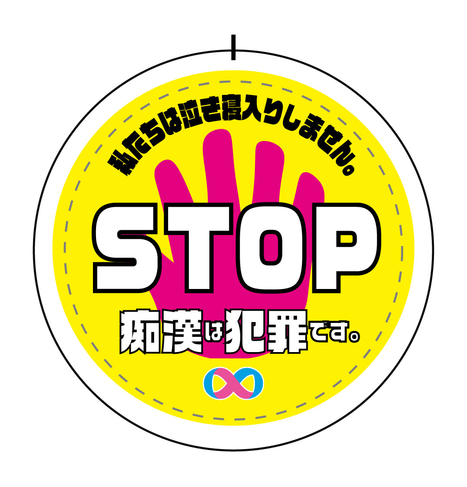

「ここで止まれ」
第11回痴漢抑止バッジデザインコンテスト 缶バッチデザイン

Overview
- 課題制作 制作全般
- 制作時期：2025年
- 使用ツール：Illustrator
Concept
本作は、痴漢行為を明確に拒否し、周囲にもその意思を伝えることを目的とした痴漢抑止バッジのデザインです。 鮮やかな色彩と簡潔な言葉によって、一瞬で意味が伝わる視認性を重視しました。 手のモチーフは「やめて」という意思表示であると同時に、被害者が声を上げていることを可視化する象徴です。 痴漢は個人の問題ではなく、周囲が気づき、止めることで防げる行為でもあります。 本作を通して、身につける人だけでなく、見る人の意識にも働きかけ、痴漢を許さない空気をつくるきっかけになることを願っています。